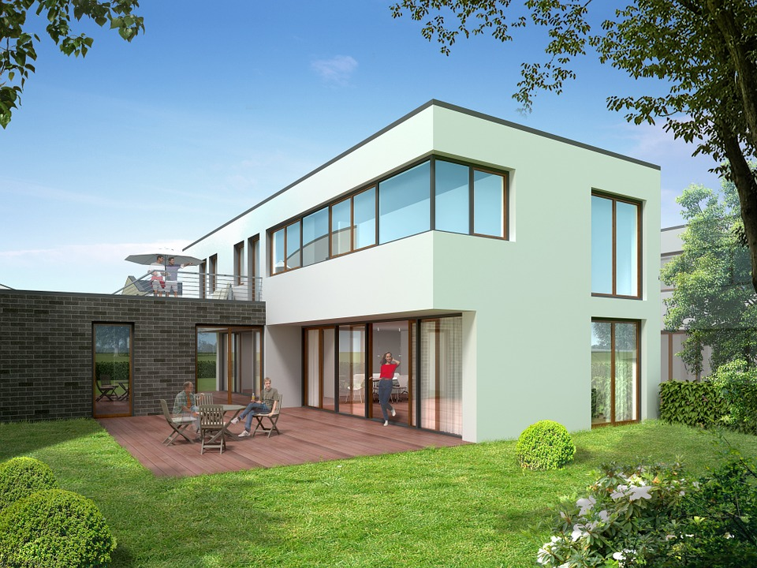

Villa Marko
Villa Marko želi Vam toplu i srdačnu dobrodošlicu. Našu obitelj kontinuirano širimo stručnim, mladim i veselim osobljem koje se zajedno s nama trudi prenjeti Vam obiteljski ugođaj za vrijeme vašeg boravka. Iskustvo koje ćete doživjeti kod nas jedinstveno je u svakom pogledu, a u nastavku Vam dajemo par razloga zašto da dođete upravo kod nas.
Odmor koji nećete zaboraviti inspiriran je spojem zdravlja i užitka. Apartmani se sastoje od osam posebno dizajniranih luksuznih Spa Premium soba i pet Spa Luxury suite-ova, a svaka smještajna jedinica opremljena je hidromasažnom kadom spojenom direktno na izvore termalne vode.
Vanjski bazen ljeti, u kombinaciji sa velikom i lijepom pečenjarom daje neograničene mogućnosti održavanja cjelodnevnih zabava što se pružaju dugo u noć.
Već po samom dolasku ostat ćete zapanjeni ljepotom morske obale u kojoj možete uživati sa svog balkona. Sobe su opremljene po najvišim standardima, a svojom udobnošću privući će vas da se poželite vratiti prvom prilikom. Sjednite u kadu, naručite čašu vina i uživajte u besprijekornom pogledu i doživljaju koji liječi i dušu i tijelo.Personalizirani pristup svakom gostu! Dođite kao gost, otiđite kao dio obitelji. Jer svakako vas želimo vidjeti ponovno. To je uostalom i najbolja potvrda da naš posao radimo dobro. S obzirom da smo mali apartmani, možemo saslušati i ispuniti svaku vašu želju, bilo da se radi o uređenju sobe, vrsti usluge, prehrambenim navikama… Veseli nas što imamo mogućnost individualno pristupiti svakom vašem upitu
Naša usluga hrane spoj je tradicionalne kvarnerske kuhinje i modernih svjetskih kuhinja. Chef Danko Ježić zajedno sa svojim timom konstantno oplemenjuje našu uslugu novim idejama i jelima, a namirnice ne traži daleko. Cilj nam je ponuditi lokalne, domaće namirnice, raditi zdrava i lagana jela, iskoristiti sve što nam naša priroda daruje. U skladu s wellness filozofijom života trudimo se ponuditi ukusnu, domaću i zdravu hranu, te ju prezentirati na moderan način i u skladu s najnovijim kulinarskim trendovima.
Apartman je kroz 10 godina od otvorenja osvojio brojne nagrade i priznanja, prvenstveno u području gastronomije, pružanja usluga, te inovativnosti.
Villa Marko je ponosna na još jedno dobiveno priznanje “Certificate of Excellence 2019 Winner” koje dodjeljuje najprestižniji svjetski portal za ocijenjivanje turističkih destinacija i sadržaja TripAdvisor. Ovo priznanje TripAdvisora je petu godinu zaredom i time je Villa Magdalena postala dio “Certificate of Excellence Hall of Fame”. Hvala svim našim gostima koji su sudjelovali kroz svoje ocjene.
Ponosni smo da je Villa Marko ponovo u samom vrhu Hrvatske i svjetske turističke ponude prema Vašim ocjenama i ponovo osvojila nagradu TripAdvisor Travelers Choice za 2020. godinu.